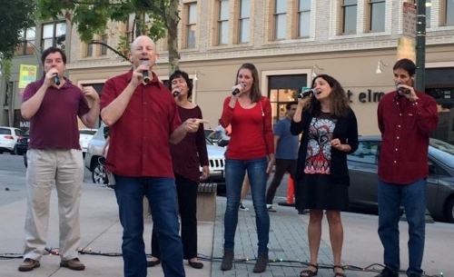
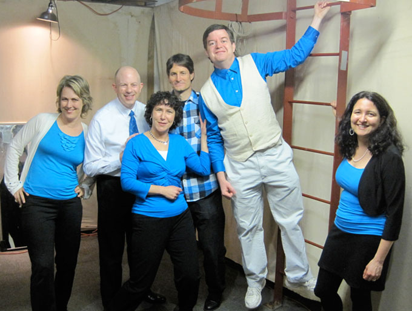
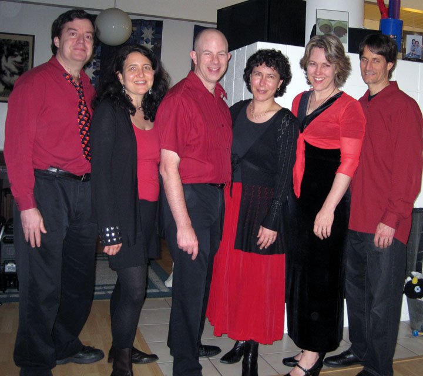

About Us
The ingredients in Smorgaschord were originally sprinkled together in a larger singing group, Peninsula Harmony Chorus. Sounds were mixed, recipes imagined, and a new small group was baked in early 2001. Current members are Bill Anderson, Larry Hamel, Alexandra Langston, Patti Schank, Mia Whitfield, and Harold Zable. We rehearse and gig on the San Francisco Peninsula.
Former Smorgaschord members include Valerie Rose (with Gallowglasses), Jen Gill (with The Outer Half), Bill Martin, Mike Pogue (with Curious Blend), and Brooke Yool.

Harold, Bill, Mia, Alex, Patti, Larry at Lytton Plaza, Palo Alto (2017).

Val, Bill, Mia, Larry, Harold, and Patti at
Sweeps 2011.
Won third place and Harold received the best arrangement award for Symphony no. 5

Preschool benefit. Left to right: Harold, Patti, Bill, Mia, Val, Larry (2011).
Pop Quiz
Who organizes parades? Answer
Which two Smorgaschord members are married to each other? Answer
Who is the parent of twin girls? Answer
Who loves rock climbing? Answer
Which member became pregnant while in Smorgaschord? (Er...not really with Smorgaschord at the time) Answer
Which former members are in Curious Blend? Answer
Which former member took the Smorgaschord food metaphor to a new extreme? Answer